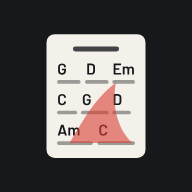

ChartShark privacy policy
Last updated: November 24, 2026
The short version. ChartShark keeps your music and your marks on your own tablet. It has no accounts, no ads, no analytics and no tracking, and nothing is sent to the person who makes it. If you choose to connect Google Drive, your library is copied to your own Drive and nowhere else.
Who this is about
ChartShark is a free music stand app for tablets. It was made by Jonathan, a teacher and gigging musician, and its code is published at github.com/jhoffmanteacher/setlist-stand. It runs in your browser and can be installed to your Home Screen from jhoffmanteacher.github.io/setlist-stand. This policy covers that app.
What stays on your tablet
Everything you put into the app is stored in your browser's own storage on your device:
- your PDF charts, and the title, artist and version you give each song;
- your setlists, crops, pen and highlighter marks, and text notes;
- small settings, such as showing two pages, and the date of your last backup;
- a private log of the last few errors, to help you if something goes wrong. It stays on your device and is never sent anywhere;
- a copy of the app's own files, so it works with no internet.
The person who makes the app never receives any of this. Backups and share packages are files saved to your device. They go nowhere unless you send them yourself.
What the app does not do
- It has no accounts or sign-up.
- It shows no ads and uses no analytics or tracking.
- It loads no code from other companies.
- It does not sell or share your information.
- It does not use your location, contacts, camera or microphone.
Where the app is hosted
The app's files are served by GitHub Pages. Like any web host, GitHub may keep ordinary records of visits, such as an IP address, under its own privacy statement. The person who makes the app does not receive them. After the first visit, the app opens from your device without asking the internet for anything.
Google Drive (optional)
Connecting Google Drive is optional and stays off until you tap Connect Google Drive in the app. Its only purpose is to keep your own library the same on your own tablets.
- What the app can see. Only files and folders that ChartShark itself creates in your Drive (Google's "drive.file" permission). It cannot see, open or change any other file in your Drive.
- What it copies. Your PDF charts, song details, setlists, crops, pen marks and text notes, into a folder named "ChartShark" in your own Drive (it is called "Setlist Stand" if it was made before 25 November 2026 and you have not renamed it).
- Where it goes. Straight between your device and Google. There is no server of ours in between, and we never receive your files, your marks or your Google sign-in.
- The sign-in. A temporary key from Google is kept only in the app's memory while the app is open, for about an hour. It is never written to your browser's storage. It is forgotten when you close or reload the app, or tap Disconnect. While you are signing in, a one-time random code is kept in your browser's storage so the app can recognise Google's answer. It is removed when the answer arrives.
- Your control. You can remove the app's access at any time at myaccount.google.com/permissions, and you can delete the "ChartShark" folder in your Drive. Neither one deletes anything on your tablets.
ChartShark's use of information received from Google APIs adheres to the Google API Services User Data Policy, including the Limited Use requirements. The information is used only to provide the Drive feature described above. It is not transferred to anyone else, not used for ads, and not read by any person.
Children
The app is not aimed at children. It collects no personal information from anyone.
Deleting your data
Your data lives on your device. Clearing this site's data in your browser, or removing the app from your Home Screen and clearing its data, deletes it. To also remove what is in Google Drive, delete the "ChartShark" folder there.
Changes to this policy
If this policy changes, the new version will be posted on this page with a new date.
Questions
Open an issue at github.com/jhoffmanteacher/setlist-stand/issues. Issues there are public, so please do not post private information.